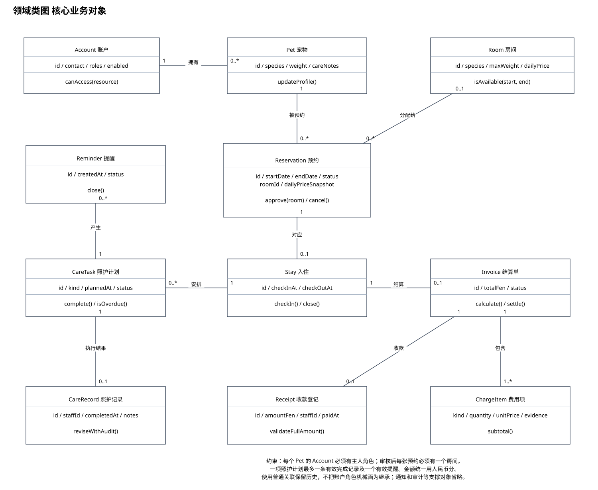
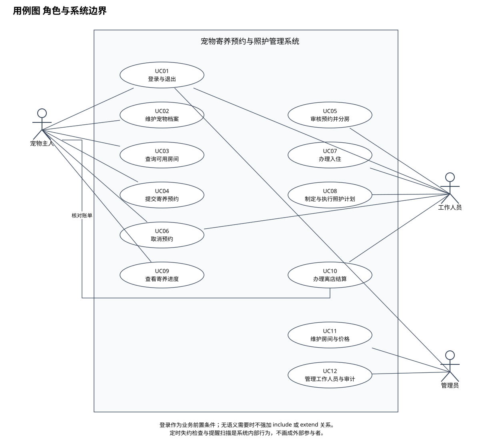
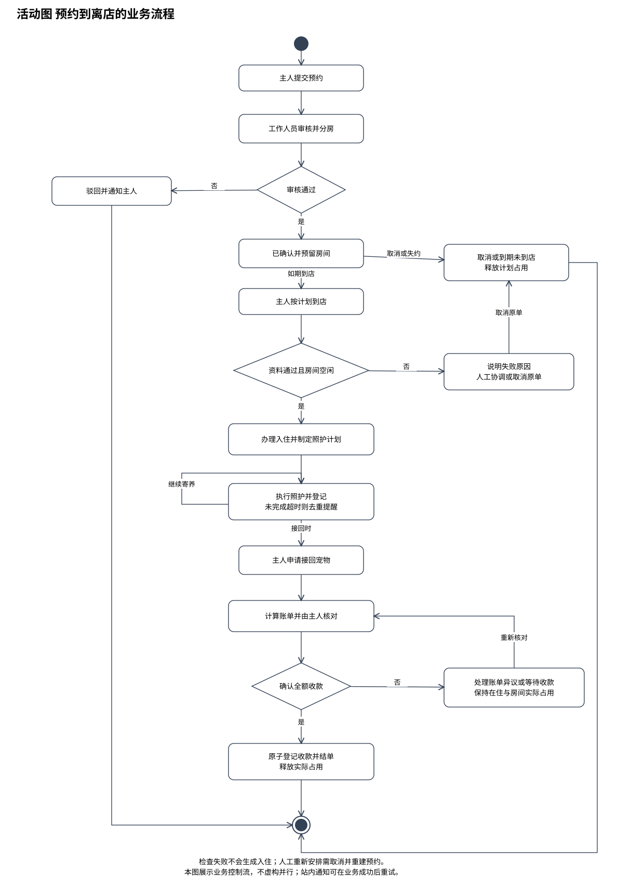
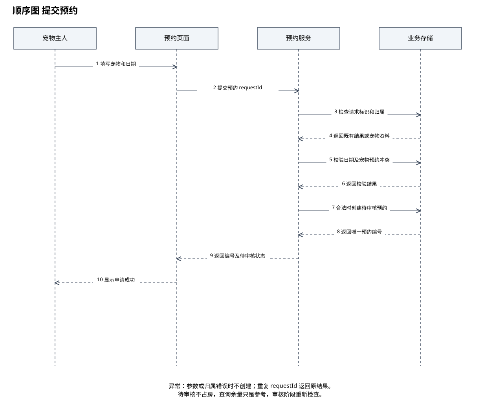
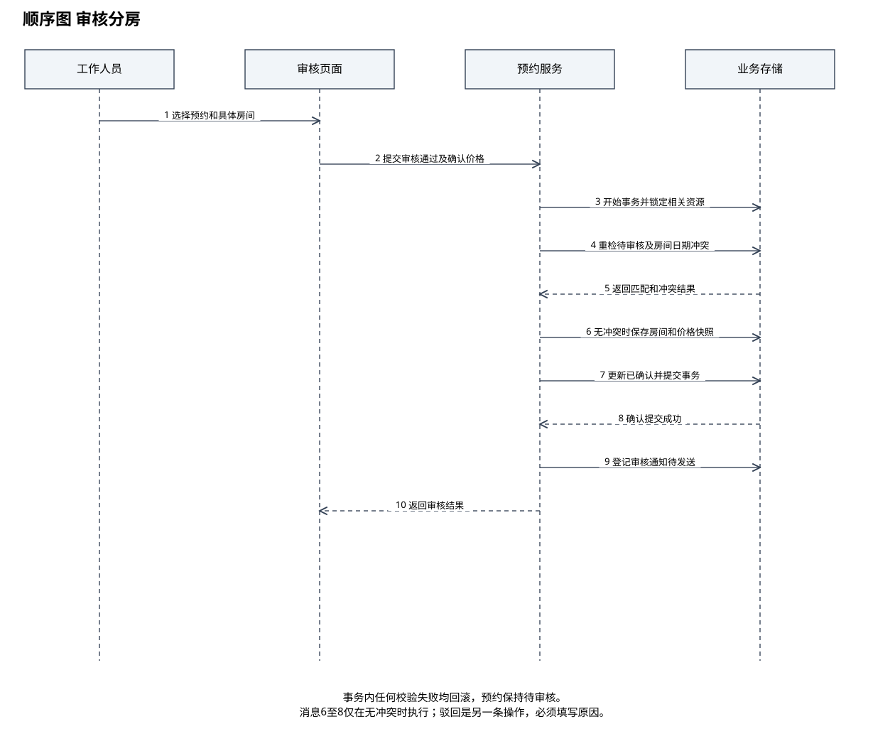
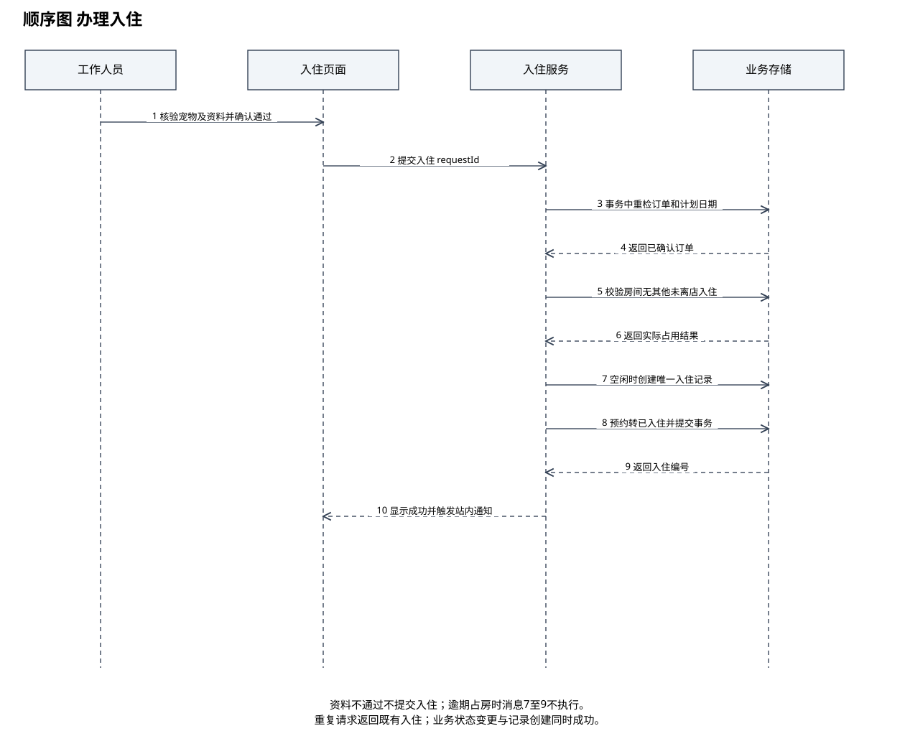
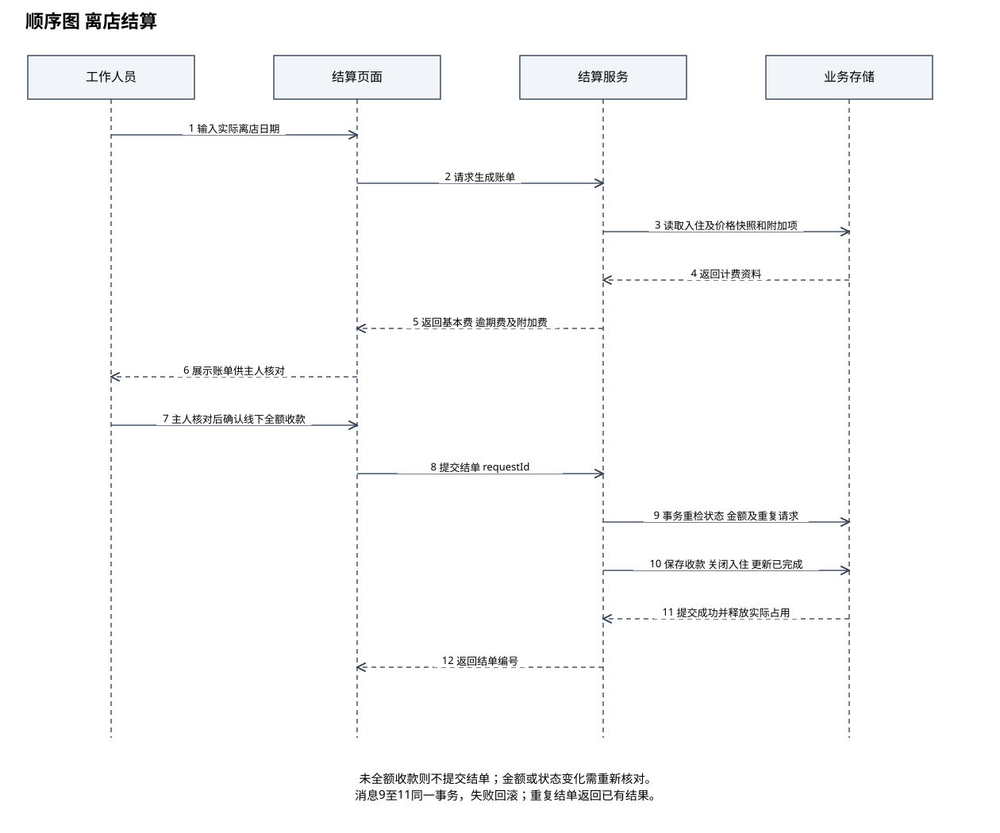

宠物寄养预约与照护管理系统
软件需求工程课程建模工程 · V1.0 · 2026年10月22日
本工程用于小组选题、需求分析及实验二至五的 UML 建模。业务范围为单家宠物寄养门店，重点是预约、审核分房、入住、照护和离店结算。本工程是需求与建模资料，不包含可部署的业务系统。
从哪里开始
1. 先阅读 01_项目与需求/01_项目立项说明.md 和 02_软件需求规格说明书.md，确认小组认可业务规则。
2. 双击 工程阅读入口.html，离线阅读全部正文和图像。Markdown 文件也可用 Obsidian、VS Code 或其他 Markdown 编辑器打开。
3. 使用 diagrams.net 或 draw.io 打开 02_UML图源文件/宠物寄养系统_UML工程.drawio，其中含七个独立画布，可直接修改节点和连线。
4. .puml 是配套的 PlantUML 文本源，可在支持 PlantUML 的编辑器中重新排版渲染；.svg 为可直接浏览和插入文档的图像。两套源文件表达同一设计，位置布局可以不同。
5. 将实验二至五报告草稿整理到教师指定报告模板，填写小组姓名、学号、班级和真实完成情况。不要把建议步骤写成已执行的实验记录。
目录
- `01_项目与需求`：立项说明、需求规格、详细用例、需求追踪矩阵。
- `02_UML图源文件`：七页 draw.io 工程和七份 PlantUML 源文件。
- `03_UML图预览`：用例图、领域类图、四张顺序图、一张活动图，共七张 SVG。
- `04_实验报告`：实验二至五的可编辑 Markdown 草稿。
- `05_核对与答辩`：验收场景、AI辅助记录模板、待确认问题、答辩要点。
与课程要求的对应
实验二对应 UC01 至 UC12 及用例图；实验三对应领域类图；实验四对应预约提交、审核分房、入住、离店结算四张顺序图；实验五对应完整寄养流程活动图。指导书要求配以充分文字描述，报告草稿已提供相应说明。
实验一报告要求分析重庆师范大学教务系统的某一功能，与本项目选题分开完成，本包没有虚构教务系统体验。指导书绘图步骤提到 Visio，本包提供的是 draw.io 和 PlantUML 原生工程，不是 .vsdx。若教师要求必须提交 Visio 原生文件，需要依照这些图在 Visio 中绘制；导入 SVG 只能作为图像参考，不能视为可编辑 UML 模型。
使用前必须确认
这里的计费、取消、房间占用和提醒规则均为本课程项目的设计约定，不代表已调研的真实门店政策。小组需要讨论确认，并将变更同步到需求、用例、图和验收场景。
宠物寄养预约与照护管理系统项目立项说明
选题与目标
项目名称为宠物寄养预约与照护管理系统。目标用户是一家宠物寄养门店及其客户，系统帮助门店统一管理预约、房间安排、入住检查、日常照护和结算记录，让宠物主人能够查看预约和照护进度。
拟解决的问题包括预约分散导致重复安排房间、宠物习惯依赖口头交接、照护记录难以追溯，以及费用缺少清晰明细。这些是待访谈核实的问题假设，不能表述为已获得的调研结论。
项目边界
纳入单门店、单只宠物一张预约单、一只宠物占用一个独立房间、按自然日差计费、工作人员线下收款后登记、站内通知和照护提醒。
不纳入多门店、在线支付网关、自动扣款、视频直播、定位硬件、宠物诊疗、智能识别、营销商城、多人拼房及在线改期。需要改变日期时，入住前取消原单并重新申请；入住后延期交由门店线下协调，系统只记录逾期费用和占用异常，不保证自动续住。
参与者与权限
宠物主人维护自己的宠物档案，查询房型，提交和取消本人预约，查看本人宠物照护记录及费用。工作人员处理已获授权的预约、入住、照护和结算。管理员负责工作人员账户、房间和价格配置，以及操作记录查询。管理员不因身份自动成为工作人员；如需执行业务，需要被授予工作人员角色。
可展示亮点
亮点一是审核时再次检测房间冲突，并以事务原子性避免两个审核同时占用同一房间。亮点二是喂食与主人提供的用药注意事项形成照护计划，逾时未登记时产生站内提醒。提醒仅支持照护记录，不提供诊断或处方。
建议小组分工
需求负责人维护需求编号与用例；建模负责人维护 UML 源文件；流程负责人核对状态、异常分支和验收场景；文档负责人统一报告格式。人数少时可合并岗位，成员姓名与实际分工由小组填写。
课程交付成果
形成需求规格说明书、十二个用例说明、一张用例图、一张领域类图、四张顺序图、一张活动图、实验二至五报告草稿及验收场景。评审关注角色权限、对象多重性、消息顺序、分支条件和跨文件一致性。
宠物寄养预约与照护管理系统软件需求规格说明书
版本 V1.0，适用于课程需求分析与 UML 评审。规则为设计基线，待小组讨论与访谈确认。
一 系统概述
系统服务单家宠物寄养门店。主人提交预约，工作人员审核并分配独立房间，到店后核验资料并办理入住，在住期间记录照护情况，离店时核对费用并登记线下收款。管理员维护基础资料和工作人员权限。
系统提供主人端与门店管理端的逻辑界面，可通过同一 Web 应用实现。部署技术不作为需求正确性的前提，本版不依赖支付网关、短信网关或智能硬件。
二 术语与业务对象
预约单是入住前的日期和房间安排；入住记录描述一次实际寄养；照护计划是待执行任务；照护记录是执行结果；结算单及费用项记录本次应收金额；收款记录是工作人员对线下收款的登记，不是银行支付回执。
账户可拥有多个角色。宠物主人和工作人员是授权角色，不应仅因名称不同就强行建立继承体系。
三 功能需求
| 编号 | 模块 | 需求 | 对应主用例 |
| FR01 | 账号与权限 | 系统按主人、工作人员、管理员授权；主人不能读取其他主人的订单或宠物。 | UC01 |
| FR02 | 宠物档案 | 主人维护宠物名称、种类、体重、联系人、饮食习惯、疫苗说明及照护注意事项。 | UC02 |
| FR03 | 房型与可用性查询 | 输入日期与宠物条件后，系统返回匹配房间数量及当前参考日价格；查询不预留库存。 | UC03 |
| FR04 | 提交预约 | 校验主人与宠物归属、日期和基础资料后创建唯一编号的待审核预约，保存提交时参考报价。 | UC04 |
| FR05 | 审核分房 | 工作人员可驳回并注明原因，或选择匹配房间重新校验冲突后确认、记录价格快照及审核人。 | UC05 |
| FR06 | 取消与失约 | 按 BR04 校验状态后取消或标记失约、释放计划占用并通知主人。 | UC06 |
| FR07 | 入住检查 | 核验资料、计划日期和实际空房后创建唯一入住记录，预约转已入住。 | UC07 |
| FR08 | 照护计划与记录 | 工作人员为在住宠物制定任务并登记执行结果，支持图片说明及有痕更正。 | UC08 |
| FR09 | 主人查看 | 主人查看本人订单状态、照护计划、完成记录、提醒处理结果和账单。 | UC09 |
| FR10 | 逾时提醒 | 每五分钟扫描未完成任务，超过计划时间30分钟生成去重提醒，完成时关闭。 | UC08 |
| FR11 | 账单与结算 | 按 BR09 至 BR11 计算明细，确认线下收款后原子结单；未确认收款保持在住。 | UC10 |
| FR12 | 房间与价格维护 | 管理员维护物种限制、体重限制、价格和维护区间，阻止与已确认或实际占用冲突。 | UC11 |
| FR13 | 工作人员与审计 | 管理员启停工作人员、分配角色并查询关键操作的操作者、时间、对象及结果。 | UC12 |
| FR14 | 站内通知 | 预约审核、取消、失约、入住和结单结果形成站内通知；业务成功后通知失败可重试。 | UC04–UC10 |
| FR15 | 附加服务登记 | 工作人员录入已获主人确认的附加项目并保留确认依据，离店账单逐项展示。 | UC10 |
| FR16 | 重复提交控制 | 预约提交、入住和结算使用请求唯一标识；相同请求重试返回已有结果，不创建重复业务记录。 | UC04/UC07/UC10 |
四 业务规则
| 编号 | 主题 | 规则 |
| BR01 | 预约范围 | 每张预约只关联一个主人名下的宠物；宠物不可在重叠日期拥有另一张已确认或已入住预约。 |
| BR02 | 时间与计费 | 计划开始日必须早于计划离店日，按本地自然日差计算，最少一天。计划区间采用 [开始日, 离店日)，相邻两单可在同一天交接。 |
| BR03 | 审核与占用 | 待审核不占房。审核通过必须分配具体可用房间，同时锁定日价格快照。已确认订单占用计划区间，已入住订单还受实际未离店占用限制。审核事务必须原子检查并保存。 |
| BR04 | 取消与失约 | 主人可取消本人待审核或已确认订单，无预付款且取消不收费。已入住不允许取消。已确认订单到计划离店日仍未入住时标记已失约并释放计划占用。 |
| BR05 | 入住条件 | 仅已确认订单可入住，且当天为计划开始日。工作人员确认宠物身份、紧急联系人及主人提供的疫苗和健康资料；任一检查不通过则不生成入住记录，由主人取消或工作人员注明原因后取消。 |
| BR06 | 房间实际占用 | 入住前必须重新检查具体房间未被其他未离店宠物实际占用。发生逾期占用时拒绝该房间入住并提示人工协调；本版不自动换房。可取消原单后重新安排。 |
| BR07 | 照护记录 | 仅在住宠物可创建照护计划及记录；记录包含执行人员、计划时间、完成时间、类型与备注，主人仅能查看本人宠物的记录。历史记录的更正必须保留修改痕迹。 |
| BR08 | 照护提醒 | 计划任务超过计划时刻30分钟且没有关联完成记录时，产生一个待处理提醒；同一任务仅保留一个有效提醒。任务完成后关闭提醒。系统时间检查为内部机制，不作为外部参与者。 |
| BR09 | 结算金额 | 基础费用=审核时日价格快照×计划天数；提前接回仍按原计划天数计费。逾期天数=max(0,实际离店自然日−计划离店自然日)，逾期费=逾期天数×日价格快照。金额使用人民币分保存。 |
| BR10 | 附加项目 | 仅收取事先取得主人确认的附加服务费；名称、数量、单价与确认依据进入费用明细。不得在离店时直接追加未经确认的服务费用。 |
| BR11 | 结单与收款 | 主人核对账单，工作人员确认线下全额收款后，系统在同一业务事务登记收款、关闭入住、将预约标记已完成并释放实际占用。重复结算请求不得重复记账；本版不支持欠款离店。 |
| BR12 | 基础资料 | 房间限猫或犬之一、设最大体重和日价格，申请和审核均校验匹配。维护或停用时间段不得与现有已确认预约重叠，也不得停用正在实际占用的房间。价格修改不追溯已确认订单。 |
五 状态与转换
| 原状态 | 事件和条件 | 目标状态 |
| 无 | 主人提交合法申请 | 待审核 |
| 待审核 | 工作人员通过并成功分房 | 已确认 |
| 待审核 | 工作人员驳回并填写原因 | 已驳回 |
| 待审核或已确认 | 合法取消 | 已取消 |
| 已确认 | 计划离店日仍未入住 | 已失约 |
| 已确认 | 通过入住检查且房间实际空闲 | 已入住 |
| 已入住 | 全额收款及结单事务成功 | 已完成 |
已驳回、已取消、已失约和已完成是终态。任何不在表中的转换均被拒绝并说明原因。检查失败和结算失败不改变原业务状态。预约有多次审核尝试的日志，但仅记录一套有效分房结果。
六 非功能需求与验收目标
以下为拟议目标，尚未进行性能或安全实测。
| 编号 | 需求 | 验证方式 |
| NFR01 | 常用查询在20个并发用户、1万条预约的测试环境中，95%请求响应不超过2秒，不含客户端网络时间。 | 以固定数据集压测并报告分位数 |
| NFR02 | 服务端必须校验资源归属和角色；密码采用加盐自适应散列；部署使用HTTPS。 | 越权场景测试与配置检查 |
| NFR03 | 同一房间重叠日期的并发审核最多成功一笔；结算失败不能部分关闭订单。 | 并发冲突与事务失败注入 |
| NFR04 | 关键业务操作记录操作者、时间、对象、前后状态与结果；普通角色不得删除审计记录。 | 日志与权限检查 |
| NFR05 | 每日备份业务数据，目标恢复点24小时内、恢复时间4小时内；实际部署前进行恢复演练。 | 模拟备份还原，记录实际结果 |
| NFR06 | 界面显示日期、费用明细和错误原因；主人端适配360像素及以上宽度。 | 原型走查 |
| NFR07 | 联系人与健康说明按最小权限访问，日志不记录明文密码；保留期限由门店及课程要求另行确认。 | 敏感数据流与日志抽查 |
七 数据字典
| 对象 | 主要字段 | 约束 |
| Account 账户 | id、displayName、contact、roles、enabled | ID唯一，角色集合控制授权 |
| Pet 宠物 | id、ownerId、name、species、weight、careNotes、vaccineNotes | 属于一个主人，物种为猫或犬，体重大于0 |
| Room 房间 | id、name、species、maxWeight、dailyPriceFen、enabled | 房间编号唯一，金额非负，维护区间由管理规则校验 |
| Reservation 预约 | id、ownerId、petId、roomId、startDate、endDate、quotedPriceFen、dailyPriceSnapshotFen、status | 待审核时roomId和价格快照可空；通过后必填；原始报价保留 |
| Stay 入住 | id、reservationId、checkInAt、checkOutAt、inspectionNotes | 每张预约至多一条入住，未离店时checkOutAt为空 |
| CareTask 照护计划 | id、stayId、kind、plannedAt、instruction、status | 同一入住可有多项计划，已离店不新增任务 |
| CareRecord 照护记录 | id、taskId、staffId、completedAt、notes、imageRef | 一项计划至多一条有效完成记录；有痕更正不新增有效完成记录 |
| Reminder 提醒 | id、taskId、createdAt、status | 同一任务至多一条有效提醒，可保留关闭后的历史 |
| Invoice 结算单 | id、stayId、status、totalFen、confirmedAt | 每次入住至多一个有效结算单，未收款前可重新计算 |
| ChargeItem 费用项 | id、invoiceId、kind、quantity、unitPriceFen、evidence | 基本费、逾期费或已确认附加费，金额等于数量乘单价 |
| Receipt 收款登记 | id、invoiceId、amountFen、method、staffId、paidAt | 每单至多一条有效全额收款，method为现金或线下转账 |
房间维护区间、通知、角色和审计日志为支撑数据，未全部展开到核心领域类图。类图不是数据库ER图，不等同于完整表结构设计。
八 界面信息需求
主人端包含登录、宠物档案、日期与房型查询、预约表单、订单详情和照护时间线。门店端包含审核队列、入住检查表、今日照护任务、离店结算与基础资料维护。结算页同时展示原定天数、提前接回不减费说明、逾期天数和附加项目确认依据。
九 边界与假设
未实现网上支付，不记录银行卡敏感信息。未提供医疗服务，健康资料用于门店人工评估。参考价格查询不保证余量；审核时以重新校验及价格确认结果为准。每日交接按自然日近似建模，真实门店的具体入住退房时刻与清洁缓冲是待确认事项。
十 来源与变更
课程依据为用户提供的《软件需求工程》实验指导书中实验二至五，以及实验报告评分细则。业务需求来自本次课程选题设计，未开展真实门店访谈。需求变更需同步更新需求编号、用例、领域类、顺序图、活动图及验收场景。
宠物寄养系统详细用例说明
登录是受保护业务的前置条件，不把所有业务都画成包含登录。UC10 中主人参与核对账单，收款操作由工作人员执行。提醒扫描与失约扫描属于系统内部机制。
UC01 登录与退出
主参与者：全部角色。
前置条件：账号已启用。
基本流程：校验凭据；建立会话并加载角色；用户退出时失效会话。
备选与异常流程：凭据错误不建立会话；账号停用拒绝登录。
后置条件：成功时建立有效会话。
关联需求：FR01；规则：BR01。
UC02 维护宠物档案
主参与者：宠物主人。
前置条件：已登录。
基本流程：打开本人档案；录入物种、体重、联系人和照护说明；校验并保存。
备选与异常流程：访问他人档案拒绝；必填项缺失返回字段错误。
后置条件：保存主人名下的合法宠物档案。
关联需求：FR02；规则：BR01。
UC03 查询可用房间
主参与者：宠物主人。
前置条件：已登录且有宠物档案。
基本流程：选择本人宠物与日期；按物种、体重和计划占用查询；显示参考价格及可用数量。
备选与异常流程：无匹配房间显示无余量；错误日期不执行查询。
后置条件：仅展示结果，不预留房间。
关联需求：FR03；规则：BR02/BR12。
UC04 提交寄养预约
主参与者：宠物主人。
前置条件：已登录且宠物资料完整。
基本流程：选择宠物、日期及房型条件；确认报价仅供参考；校验归属与日期；用请求唯一标识创建待审核预约；返回编号。
备选与异常流程：重复请求返回原预约；重叠已确认预约拒绝；资料缺失要求补充。
后置条件：产生一条待审核预约，不占用房间。
关联需求：FR04/FR16；规则：BR01–BR03。
UC05 审核预约并分房
主参与者：工作人员。
前置条件：预约为待审核。
基本流程：查看申请和宠物限制；选择具体房间；系统原子校验状态及冲突；记录价格快照和审核人；状态改已确认；生成通知。
备选与异常流程：选择驳回须填原因；并发冲突不确认，保留待审核；价格变化先与主人确认并保留确认说明。
后置条件：通过时获得确定房间与价格快照；驳回时为已驳回。
关联需求：FR05/FR14；规则：BR03/BR12。
UC06 取消预约
主参与者：主人或工作人员。
前置条件：订单待审核或已确认；主人仅限本人订单。
基本流程：查看订单；填写取消原因；系统重检权限与状态；转已取消并释放计划占用；通知主人。
备选与异常流程：已入住和终态订单拒绝；与入住并发时仅允许一个合法转换成功。
后置条件：有效取消后订单为已取消，无取消费。
关联需求：FR06/FR14；规则：BR04。
UC07 办理入住
主参与者：工作人员。
前置条件：订单已确认，且当天为计划开始日。
基本流程：核验宠物、联系人及主人资料；确认检查通过；重检订单状态、计划日期与房间实际空闲；创建入住；订单转已入住；通知主人。
备选与异常流程：检查不通过不生成入住；房间被逾期占用则提示人工协调；重复请求返回已有入住。
后置条件：恰好一条入住记录，房间处于实际占用。
关联需求：FR07/FR16；规则：BR05/BR06。
UC08 制定与执行照护计划
主参与者：工作人员。
前置条件：存在未离店入住记录。
基本流程：制定任务；查看待办；执行后登记完成时间、备注及图片；校验状态并保存；更新任务完成状态；关闭关联有效提醒。
备选与异常流程：重复完成拒绝；更正需保留前后值及操作者；超过30分钟未完成由内部定时检查去重生成提醒。
后置条件：计划与执行结果可追溯。
关联需求：FR08/FR10；规则：BR07/BR08。
UC09 查看寄养进度
主参与者：宠物主人。
前置条件：已登录且订单属于本人。
基本流程：选择订单；读取状态、计划、照护记录、提醒处理结果及账单；按时间展示。
备选与异常流程：他人订单拒绝访问；尚无记录显示空状态。
后置条件：仅返回有权限查看的数据，不修改业务。
关联需求：FR09；规则：BR07。
UC10 办理离店结算
主参与者：工作人员；主人核对费用。
前置条件：订单已入住且尚未结单。
基本流程：输入实际离店日期；读取价格快照；计算基本费、逾期费和已确认附加费；主人核对；工作人员确认线下全额收款；系统原子登记收款、结束入住、更新预约并释放实际占用。
备选与异常流程：主人有异议返回核对；未全额收款保持在住；事务失败全部回滚；同请求重试返回既有结果。
后置条件：一条有效收款登记，预约已完成且入住已关闭。
关联需求：FR11/FR15/FR16；规则：BR09–BR11。
UC11 维护房间与价格
主参与者：管理员。
前置条件：具有管理员角色。
基本流程：选择房间；修改物种、体重限制、未来价格或维护区间；校验冲突；保存并记录审计。
备选与异常流程：维护与已确认预约冲突或房间实际占用则拒绝；不修改已确认订单价格快照。
后置条件：基础资料更新且历史价格保持稳定。
关联需求：FR12；规则：BR12。
UC12 管理工作人员与审计
主参与者：管理员。
前置条件：具有管理员角色。
基本流程：创建或停用工作人员；分配业务角色；按人和时间查询关键操作日志。
备选与异常流程：无权限拒绝；停用不删除历史操作者引用。
后置条件：角色和启用状态更新，日志可追溯。
关联需求：FR13；规则：BR11。
需求追踪矩阵
| 需求 | 用例 | 建模覆盖 | 验收场景 |
| FR01 | UC01 | 用例图；活动图或用例文字说明 | TC01/TC02 |
| FR02 | UC02 | 用例图；领域类图（核心对象） | TC03 |
| FR03 | UC03 | 用例图；领域类图（核心对象） | TC04 |
| FR04 | UC04 | 用例图；提交预约顺序图；活动图 | TC05/TC06 |
| FR05 | UC05 | 用例图；审核分房顺序图；活动图 | TC07/TC08/TC09 |
| FR06 | UC06 | 用例图；活动图或用例文字说明 | TC10/TC11 |
| FR07 | UC07 | 用例图；入住顺序图；活动图 | TC12/TC13/TC14 |
| FR08 | UC08 | 用例图；活动图或用例文字说明 | TC15 |
| FR09 | UC09 | 用例图；活动图或用例文字说明 | TC02/TC15 |
| FR10 | UC08 | 用例图；活动图或用例文字说明 | TC16 |
| FR11 | UC10 | 用例图；结算顺序图；活动图 | TC17/TC18/TC19 |
| FR12 | UC11 | 用例图；领域类图（核心对象） | TC20 |
| FR13 | UC12 | 用例图；领域类图（核心对象） | TC01/TC21 |
| FR14 | UC04–UC10 | 用例图；活动图或用例文字说明 | TC22 |
| FR15 | UC10 | 用例图；结算顺序图；活动图 | TC18 |
| FR16 | UC04/UC07/UC10 | 用例图；活动图或用例文字说明 | TC06/TC14/TC19 |
非功能需求的验证方式见规格说明书；本矩阵是静态覆盖检查，不代表已通过运行测试。
实验三 AI辅助的类图设计
课程：软件需求工程
选题：宠物寄养预约与照护管理系统
班级：________ 组号：________ 姓名与学号：________
实验日期：________ 实际分工：________
本稿提供项目分析与图的说明。实验工具、AI交互、人工对比和实际操作结论需由小组完成后填写。

实验三 AI辅助的类图设计
实验目标
识别领域对象、属性、操作和关系，使用多重性约束描述业务数据之间的联系。
类的识别
核心对象包括Account、Pet、Room、Reservation、Stay、CareTask、CareRecord、Reminder、Invoice、ChargeItem和Receipt。预约表达计划安排，入住表达实际寄养，两者分开可以准确记录取消未入住、检查失败以及实际离店时间。
主要关系解释
一个主人账户可拥有零至多只宠物，每只宠物只属于一个主人。每张预约关联一只宠物，待审核时可以尚未分配房间，因此预约到房间的多重性为0..1；审核通过后用额外约束要求恰好一个房间。同一房间可以在不重叠区间关联多个预约。
每张预约至多产生一次入住，一次入住可有多个照护任务。一个任务至多有一条有效完成记录，可有多条历史提醒，但至多一个有效提醒。一次入住至多有一张有效结算单，一张结算单包含一个或多个费用项，并至多对应一条有效全额收款记录。
关系类型选择
类之间采用普通关联，避免把业务记录的归属误解为删除时必须级联销毁的组合。角色通过Account的角色集合授权，不使用主人、工作人员、管理员的强制继承。执行人员通过staffId引用Account，图中省略该类支撑关联以保持核心业务可读性，数据字典保留字段说明。
属性与操作说明
Reservation保留计划日期、状态与确认后的价格快照；Room当前价格变更不影响既有订单。Invoice负责计算账单，Receipt记录线下收款登记。图中的操作属于领域职责，不指定数据库接口或技术框架。
AI对比与人工核验建议
核验重点是预约和入住是否混为一类、房间数量限制能否表达、类图多重性是否与业务一致，以及是否误把角色关系画成继承。可对AI提出反例：两个工作人员同时确认同一房间怎么办，宠物未入住就取消是否仍需要入住记录。实际对比材料需按记录模板补充。
结论与待完善事项
领域模型覆盖业务主线，通知、审计、维护区间与授权明细属于后续逻辑设计中的支撑对象。图不作为完整数据库表结构或已实现代码的证明。
实验二 AI辅助的用例图绘制
课程：软件需求工程
选题：宠物寄养预约与照护管理系统
班级：________ 组号：________ 姓名与学号：________
实验日期：________ 实际分工：________
本稿提供项目分析与图的说明。实验工具、AI交互、人工对比和实际操作结论需由小组完成后填写。

实验二 AI辅助的用例图绘制
实验目标
从项目需求中识别系统外部参与者及其目标，明确系统边界，形成用例图和详细用例说明。
参与者识别
宠物主人负责申请与查看本人寄养业务；工作人员处理审核、入住、照护和结算；管理员管理房间、价格及工作人员授权。三者是权限角色，同一个账户可以拥有多个角色，因此本图不画角色继承。
用例与关系分析
UC01至UC12分别覆盖登录、宠物档案、房间查询、提交预约、审核分房、取消、入住、照护、查看进度、结算和基础管理。主人参与结算的账单核对，工作人员执行收款登记与结单。
本图采用参与者与用例之间的普通关联。登录属于受保护业务的前置条件，不将所有用例都画成包含登录。当前粒度没有必须抽取的公共子用例，也没有必须建模的扩展用例，因此不为展示符号而添加 include 或 extend。
典型用例说明
UC05审核分房以待审核预约为前置条件。工作人员选择具体房间后，系统重新检查物种、体重和日期冲突；无冲突时保存价格快照并确认预约；有冲突时保持待审核。UC07入住还必须检查实际占用，避免计划区间未冲突但前一只宠物逾期未离店的情况。
AI辅助与人工核验建议
可用提示词为：从需求说明书识别外部参与者和用户目标，说明哪些动作是前置条件，检查是否误用包含和扩展。人工需核对主人是否只能访问本人资源、定时任务是否被误画为参与者，以及结算是否遗漏主人的核对角色。实际使用的提示词、AI原始输出和人工修改请填写记录模板。
结论与待完善事项
用例图覆盖主要外部目标，详细步骤在UC01至UC12中展开。提交前需按教师要求在Visio中绘制或确认可接受现有格式，并填写本组实际绘图、核验和修改记录。
实验五 AI辅助的活动图绘制
课程：软件需求工程
选题：宠物寄养预约与照护管理系统
班级：________ 组号：________ 姓名与学号：________
实验日期：________ 实际分工：________
本稿提供项目分析与图的说明。实验工具、AI交互、人工对比和实际操作结论需由小组完成后填写。

实验五 AI辅助的活动图绘制
实验目标
对预约、入住、照护和结算的业务活动进行建模，展示分支、循环和终止条件。
主流程说明
主人提交预约，工作人员审核并分配房间。审核通过后预约获得计划占用；主人按计划到店，工作人员检查资料和房间实际空闲状态，通过后办理入住并制定照护计划。在住期间重复执行照护和登记；主人申请接回后生成账单，核对并全额收款后结单。
分支与终止
审核失败进入驳回后终止。本单在入住前取消或到期未到店时释放计划占用并终止。入住检查失败不创建入住，进入人工协调，需要重新安排时取消原单后重新申请；新申请属于新的流程实例。
结算存在异议或未确认全额收款时，返回费用核对与等待，预约继续保持已入住，房间也保持实际占用。确认收款并成功结单才释放实际占用。
循环与提醒
照护活动在宠物继续寄养期间循环。内部扫描每五分钟检查照护任务，超过计划时间30分钟仍未完成则创建去重提醒；任务完成关闭提醒。活动图对照护过程作摘要，具体时间规则以需求说明书为准。
并行判断
本业务主流程不要求强制并行。不能为了展示同步条而将“收款”和“关闭入住”画成互不依赖的并行活动。通知发送可由业务成功后的内部处理重试，但不影响主流程是否成功。
AI流程核验建议
核对每个判断的条件是否完整、循环是否有退出条件、所有终止分支是否释放了正确的计划或实际占用，以及结算失败是否错误释放房间。用取消、逾期占房、未全额收款三个反例走查流程，并记录实际发现的问题和修订。
结论与待完善事项
活动图表达业务控制流，顺序图表达对象协作，两者在审核、入住和结单的状态结果上保持一致。待补充实际小组讨论记录和最终绘图截图。
实验四 AI辅助的顺序图绘制
课程：软件需求工程
选题：宠物寄养预约与照护管理系统
班级：________ 组号：________ 姓名与学号：________
实验日期：________ 实际分工：________
本稿提供项目分析与图的说明。实验工具、AI交互、人工对比和实际操作结论需由小组完成后填写。

实验四 AI辅助的顺序图绘制
实验目标
将典型用例转为按时间排序的对象消息，明确页面、业务服务和存储之间的职责及失败处理。
生命线划分
四个场景均采用外部操作者、页面、业务服务、业务存储的四条生命线。页面负责收集信息和显示结果，服务负责业务校验与状态变更，存储负责持久化和并发约束。图中业务存储是技术协作对象，不属于领域类图中的实体类。
场景一 提交预约
主人填写日期和宠物后，页面发送带唯一请求标识的申请。服务检查请求重复、档案归属、日期合法性与宠物重叠预约，合法时创建待审核预约。待审核不分配房间，也不预留库存；重复请求返回原编号。
场景二 审核分房
工作人员选择具体房间和确认价格后，服务在事务中重检预约仍为待审核、房间匹配且日期无冲突，然后保存分房和价格快照，更新已确认。并发冲突或状态变化时回滚；只有业务成功后才安排通知，通知失败不撤销已确认结果。
场景三 办理入住
工作人员先核验宠物与资料，再提交入住。服务重检已确认状态、当天为计划开始日和房间实际空闲；全部通过后，同时创建入住记录和更新预约。逾期宠物仍在房间时拒绝入住，提示人工协调，不凭计划日期直接放行。
场景四 离店结算
服务依据价格快照、计划天数、逾期天数和已确认附加项目计算账单。主人核对后，工作人员登记全额线下收款。服务再次校验金额与状态，在同一事务保存收款、结束入住、更新预约为已完成。事务失败回滚，重复结单返回已有结果。
异常与表示约定
PlantUML源文件包含alt条件片段；SVG与draw.io版以条件文字和图下注释说明条件消息，按主成功路径排列。若教师要求标准组合片段边框，请在Visio中以PlantUML的alt分支重绘。四张图均用虚线表达返回，实线表达请求，不将返回箭头误当成新业务操作。
需求变更练习
可提出“收款确认前增加价格二次核对”的变更。此时需在结单事务前重新读取费用项，金额变化返回核对页面，而不能沿用旧账单直接结单。记录原需求、变更原因、修改消息及关联验收场景；本包已经采用结单前重检金额的设计，不将该练习描述为已经开展的实验。
结论与待完善事项
顺序图聚焦关键状态变更和事务边界，实际实验中的AI原始结果、人工修订和截图由小组补充。
配套顺序图

顺序图 审核分房

顺序图 办理入住

顺序图 离店结算需求验收场景
以下是拟执行场景，尚未进行运行测试。完成建模走查或实现后，在每项下记录实际结果、证据和执行人员。金额均为课程示例。
| 编号 | 需求 | 输入或操作 | 预期结果 |
| TC01 | FR01/FR13 | 已停用工作人员尝试登录 | 拒绝登录；不得仅隐藏页面而保留接口权限 |
| TC02 | FR01/FR09 | 主人A使用主人B的宠物或预约编号访问 | 拒绝访问，不返回B的联系人与照护内容 |
| TC03 | FR02 | 提交体重为0或缺少紧急联系人的档案 | 返回字段错误，不保存非法资料 |
| TC04 | FR03 | 查询2026-11-01至2026-11-03；已有另一单11月3日开始 | 相邻区间不冲突；不因此占用房间 |
| TC05 | FR04 | 合法资料提交11月1日至3日预约 | 创建一笔待审核，不预留房间 |
| TC06 | FR04/FR16 | 相同requestId连续提交两次 | 返回同一预约编号，只产生一笔业务 |
| TC07 | FR05 | 有两笔待审核，尝试给同一房间安排重叠日期 | 仅第一笔可确认，另一笔提示冲突 |
| TC08 | FR05 | 两名工作人员并发确认同一房间同一区间 | 最多一笔成功，另一笔回滚并保留待审核 |
| TC09 | FR05 | 房价由80元变为90元，审核时主人确认新价格 | 参考报价保留80元，日价格快照记录90元 |
| TC10 | FR06 | 主人取消已确认但未入住订单 | 转已取消并释放计划占用，不收费 |
| TC11 | FR06 | 已确认订单到计划离店日仍无入住 | 转已失约并释放计划占用，通知主人 |
| TC12 | FR07 | 计划开始日资料合格且实际空房 | 创建一条入住并转已入住 |
| TC13 | FR07 | 计划区间不冲突但前一只宠物逾期未离店 | 拒绝入住，保留已确认并提示人工协调 |
| TC14 | FR07/FR16 | 重复提交同一入住请求或取消与入住并发 | 至多一条入住；状态转换不能同时成功 |
| TC15 | FR08/FR09 | 工作人员完成任务后主人查看记录 | 出现对应执行人、完成时间和备注；离店后不得新增任务 |
| TC16 | FR10 | 计划10:00；10:30扫描及10:35、10:40扫描 | 10:30尚未超过30分钟不提醒；10:35创建一条；10:40不重复；完成后关闭 |
| TC17 | FR11 | 日价80元，计划11月1日至4日，11月3日提前接回 | 计划3天，基本费240元，不因提前接回退费 |
| TC18 | FR11/FR15 | 同上计划，11月5日接回，另有确认附加费30元 | 基本费240元+逾期80元+附加30元=350元，未确认附加费不能入账 |
| TC19 | FR11/FR16 | 收款登记保存后故障，随后重试结单 | 首次整体回滚；重试最终只有一条有效收款，不重复结单 |
| TC20 | FR12 | 管理员将已预订房间在重叠日期设为维护或修改现价 | 重叠维护拒绝；单独修改现价不改变已确认快照 |
| TC21 | FR13 | 停用有历史业务的工作人员 | 历史记录仍保留其身份引用，不级联删除 |
| TC22 | FR14 | 审核已成功，但站内通知登记或发送暂时失败 | 已确认状态保留；可重试补发，不重复分房 |
执行记录
执行日期：________；执行人员：________；场景编号：________；实际结果：________；证据路径：________；是否通过：________。
AI辅助与人工核验记录模板
记录填写原则
指导书要求比较人工观察和AI结果、核验图并体验需求变更。下表用于记录实际操作，不是已经完成的实验日志。
单次交互记录
实验编号：________
执行成员与时间：________
使用工具及模型：________
输入材料版本：________
实际提示词原文：________
AI原始输出或截图路径：________
人工发现的问题及依据：________
修改前图文件及修改后图文件：________
修改涉及的FR、BR、UC、TC编号：________
复核人员与结论：________
建议核验问题
1. 登录是否被不必要地包含进所有用例？
2. 同一房间重叠预约的多重性和时间约束是否同时表达？
3. 预约取消后是否错误地创建入住或收款记录？
4. 提醒是否每次扫描都重复生成？
5. 结单失败后是否错误释放房间？
建议变更练习
将“取消不收费”变更为“入住前24小时内取消收取固定费用”，先明确是否引入预付款或欠款管理，再更新BR04、UC06及相关图和验收场景。该练习属于建议，不应直接写进当前V1.0的已确认规则。
待确认事项与提交清单
需要小组或教师确认
- 是否要求提交Visio原生工程。当前提供draw.io和PlantUML，并未生成vsdx。
- 是否使用学校统一报告模板，以及图的数量、封面、文件命名与分工要求。
- 门店是否真的采用单宠独立房间，是否需要按小时退房或清洁缓冲。
- 无预付款、取消免费、提前接回不减费和逾期按自然日计费的约定是否认可。
- 未全额收款不结单、逾期占房人工协调等简化是否符合小组预期。
- 联系人与照护资料保存期限、图片访问范围及工作人员权限边界。
提交前逐项核对
- [ ] 小组成员读过并认可BR01至BR12。
- [ ] 所有图的角色、对象名、状态名与需求规格一致。
- [ ] 图中多重性和消息顺序经人工逐项检查。
- [ ] 使用自己的工具重新打开源文件并保存，保留版本。
- [ ] 实验报告已补充真实操作截图、AI原始输出和人工修订记录。
- [ ] 姓名、学号、班级、组号与实际分工均已填写。
- [ ] 按教师要求补交实验一教务系统体验分析。
- [ ] 未将拟议性能目标或验收场景写成已验证结果。
- [ ] 如有规则变化，已同步更新FR、BR、UC、图和TC。
评审时应能解释
为什么选择这一业务；哪些功能不做；主人和工作人员各自能做什么；为什么预约与入住分开；如何处理重复请求、重复预约和重复提醒；何时占房、何时释放；结算失败后状态如何保持一致。
宠物寄养系统答辩问答
为什么选择这个项目
业务有明确角色和完整生命周期，能从用户目标展开用例，从业务名词识别类，从关键操作分析对象协作，并通过审核和结算分支表达活动流程。
预约和入住为什么分开
预约只是计划，可能取消、驳回或失约；入住才代表实际寄养。分开后可以正确描述没入住就取消，以及计划离店日和实际离店时间不同的情况。
查询有房为什么审核时还要检查
查询不会预留库存，其他申请可能先被审核通过。审核必须重新检查，并在原子事务中确认，避免两个人同时拿到同一房间。
如何避免重复提交
使用请求唯一标识，服务端在创建和状态转换时校验。相同请求返回原结果。按钮禁用只是交互改进，不能替代服务端幂等约束。
类图为什么没有主人继承用户
角色可以重叠，一个账户可以既是主人又有门店权限。继承会给角色切换增加限制，因此采用角色授权。
为什么未强制使用包含和扩展
包含表示必需的公共子行为，扩展表示条件下插入的附加行为。当前粒度没有必须抽取的子用例，登录用前置条件表达更清楚。
提醒如何防止重复
任务超时后检查是否已有有效提醒。同一任务最多一个有效提醒，任务完成后关闭；周期扫描不能每次都新增。
钱如何计算
按确认日价格快照乘计划自然日天数，提前接回仍按计划计费；超出计划离店日按额外自然日计费，再加主人已确认的附加项。金额用人民币分保存。
计划空房但宠物没被接走怎么办
入住时重检实际占用，拒绝把新宠物安排进仍被占用的房间，并交由门店协调。本版没有自动换房和续住功能。
收款和结单如何保持一致
登记全额收款、关闭入住和更新预约在同一业务事务完成，失败回滚。重复结单返回已有结果，不能再产生一笔收款。
项目是否已经实现
本包完成课程需求与建模资料，不包含已部署系统。性能、安全和恢复指标是拟议验收目标，不能声称已经通过测试。